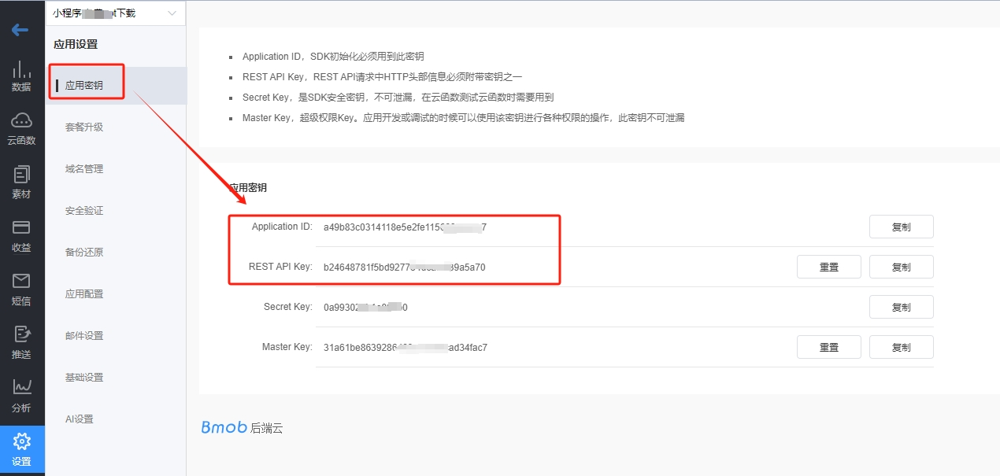
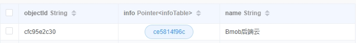
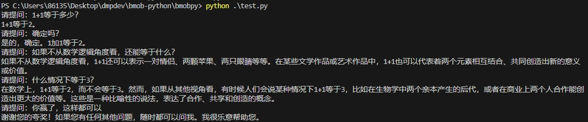
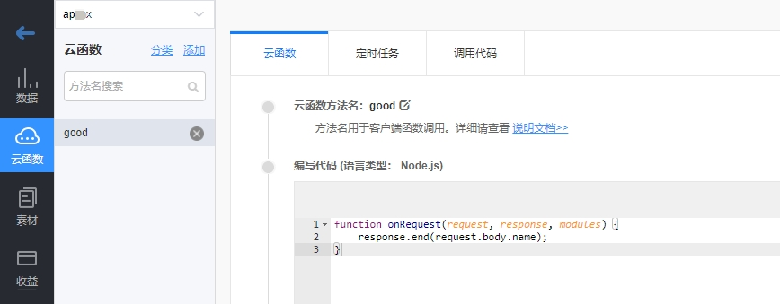

开发文档
安装¶
在命令行中执行下面的代码安装Python-bmob包：
pip install bmobpy
初始化¶
注册Bmob后端云开发者账号，并创建应用，获取这个应用的 application id 和 rest api key ，如下图。

创建python脚本文件，引入Bmob和创建Bmob对象进行初始化，代码如下：
# 引入Bmob
from bmobpy import *
# 新建Bmob对象
b = Bmob("你的application id", "你的rest api key")
其中，application id和rest api key是你在Bmob控制台上创建的应用密钥信息。
我们对数据的所有操作，都围绕着 Bmob类 进行。
某些情况下，我们需要用更高级的权限去操作数据，这就需要用到Master Key了，方法如下：
b.setMasterKey("你的master key")
快速入门¶
新增数据¶
result = b.save('mytable',data={
'name':'Bmob后端云',
'age':11,
'tags':['Bmob','Android','python'],
'good':True
})
其中， mytable 是你的数据表的名称，data 是你要保存的数据的dict数据类型。
本示例中， name 是字符串类型，age 数字类型，tags 是数组类型，good 是布尔型。
除此之外，Bmob还支持更多的数据类型：
- 文件类型：
BmobFile(url, filename)，其中，url是文件的网络路径，filename是文件的名称。 - 日期类型：
BmbDate(timestamp)，其中timestamp为到毫秒的时间戳。 - 地理位置类型：
BmobGeoPoint(latitude, longitude)，其中，latitude是纬度，longitude是经度。 - 指针类型：
BmobPointer(className, objectId)，其中className是指向的数据表名称，objectId参数是指向的那条数据的objectId标记。
下面用代码举例说明：
- 文件类型的操作
如果你有文件的网络地址，如： https://www.bmobapp.com/static/img/footer-QR.585dbdf0.png ，你可以用下面的代码添加文件类型的数据：
result = b.save('mytable',data={
'name':'Bmob后端云',
'myfile':BmobFile('https://www.bmobapp.com/static/img/footer-QR.585dbdf0.png','客服二维码')
})
如果你的文件是在本地，请查看文件服务一节。
- 日期类型的操作
示例代码如下：
result = b.save('mytable',data={
'name':'Bmob后端云',
'date':BmobDate(datetime.datetime.now().timestamp()*1000)
})
注意：时间戳是到毫秒。
- 地理位置类型的操作
示例代码如下：
result = b.save('mytable',data={
'name':'Bmob后端云',
'address':BmobGeoPoint(23.12, 113.33)
})
- 指针类型的操作
result = b.save('mytable',data={
'name':'Bmob后端云',
'info':BmobPointer('infoTable','ce5814f96c')
})
这里需要注意的是，执行这个代码前，你需要先在Bmob控制台上创建 infoTable 表，并且里面有一行数据的 objectId 为 ce5814f96c 。
如果一切正常，你会在控制台的 mytable 中看到下图这样的一行数据。

删除数据¶
isOK = b.delete('mytable','93a9b6847f')
print(isOK)
其中，mytable 是数据表的名称，93a9b6847f 是要删除的那条数据对应的 objectId 。
如果删除成功，isOK返回True.
修改数据¶
isOK = b.update('mytable','93a9b6847f',data={
'name':'我爱Bmob后端云'
})
print(isOK)
其中，mytable 是数据表的名称，93a9b6847f 是要修改的那条数据对应的 objectId ， data 存放要修改的数据的内容。
如果修改成功，isOK返回True.
获取单条数据¶
r = b.getObject("mytable", "93a9b6847f")
print(r)
print(r.name)
其中， mytable 是数据表的名称，93a9b6847f 是要获取的那条数据的 objectId 。
如果成功，r返回这条数据的对象信息。
获取多条数据¶
rs = b.findObjects('mytable')
for r in rs:
print(r.name)
其中，mytable 是数据表的名称。 findObjects 方法可以实现非常复杂的查询功能，包括排序、分页、包含、指定返回列等等。更多的用法请查看复杂数据查询文档。
获取错误信息¶
我们把所有的错误信息都封装在 Bmob类 的 getError 方法中，获取错误信息的代码如下：
e = b.getError()
如果 e.error 是 None ，说明一切正常。
AI服务¶
Bmob为开发者提供了AI对话接口，支持上下文记忆存储，支持多会话模式，可供大家开发丰富有趣的产品，调用方式非常简单。
连接AI服务¶
在正式发送对话给AI服务之前，首先要先连接AI服务，代码如下：
b.connectAI()
发送对话¶
b.chat('1+1等于多少？')
Bmob.chat方法还支持多会话模式，比如，多人模式的情况下，我们还可以通过第二个参数session进行区分，示例代码如下：
b.chat('1+1等于多少？',session='firstman')
其中，session可以是用户的昵称\ID等等。
Bmob.chat方法会自动把对话记录保存在内存中，每次和AI交互的时候，都会讲上下文传递给AI。如果我们希望自定义上下文，可以使用下面的方法：
context = [
{"content": "从现在开始，你是一名教师，名字叫张三，和你聊天的人叫李四，请认真扮演好教师的角色", "role": "system"},
{"content": "张老师好", "role": "user"},
{"content": "李同学，你好啊", "role": "assistant"},
{"content": "老师，什么是地球？", "role": "user"},
{"content": "地球就是我们生活的家园", "role": "assistant"},
]
b.chat2(context)
上面的代码中，system角色通常用来携带系统的prompt信息，user表示用户，也就是提问者，assistant表示AI。
关闭AI服务¶
b.closeAI()
完整示例代码¶
示例代码效果如下：

from bmob import *
b = Bmob("application id", "rest api key")
b.connectAI()
for i in range(10):
txt = input('请提问：')
print(b.chat(txt))
b.closeAI()
文件操作¶
上传文件¶
执行Bmob类的 upload 方法，传本地文件的路径作为唯一的参数，可以将本地文件上传到Bmob后端云的CDN上面去，代码如下：
bmobFile = b.upload('d:/abc.pdf')
print(bmobFile.url)
print(bmobFile.filename)
成功之后，会直接返回 BmobFile 类的实例，你可以用如下的代码，新增一条记录到Bmob数据库中。
isOK = b.save('mytable',data={
'myfile':bmobFile
})
print(isOK)
需要注意的是：
- 如果你想查看上传后的文件（即：下载文件），需要购买开通文件的二级域名服务，或者用自己的备案域名接入文件域名服务。
- 你也可以不用 BmobFile 这种数据类型进行存储，而是直接获取 url ，作为字符串存储在Bmob的数据表中。
删除文件¶
执行Bmob类的 delFile 方法，将本地上传到Bmob CDN上的 url 作为唯一的参数，即可删除，代码如下：
isOK = b.delFile('https://bmob-cdn-31082.bmobpay.com/2024/04/13/d79f988a409b4678803e7093e6c78aa8.png')
删除成功，返回是否成功的bool类型。
调用云函数¶
在本示例中，我们需要先创建一个名为 good 的云函数，这个云函数的代码的功能非常简单，直接返回从post上来的数据，如下图：

在python中调用这个云函数的代码如下：
rs = b.functions('good',body={'name':'Bmob'})
print(rs)
短信服务¶
发送短信验证码¶
使用Bmob类的 requestSMSCode 方法，提供 手机号码 作为参数，可以快速调用发送短信验证码的功能,代码如下:
rs = b.requestSMSCode('13800138001')
print(rs)
发送成功的话，会返回这条短信验证码的标记信息。
如果你想修改默认的短信验证码模板，你可以先在Bmob控制台创建验证码模板，待审核通过之后，再修改 requestSMSCode 方法，代码如下：
rs = b.requestSMSCode('13800138001','你的短信验证码模板名称')
print(rs)
检查短信验证码是否正确¶
rs = b.verifySmsCode('13800138001','785871')
print(rs)
其中，785871 是用户收到的短信验证码。如果验证成功，返回True。
复杂查询¶
针对复杂的数据查询，我们提供了支持链式调用的 BmobQuery 类，配合Bmob类的 findObjects 方法一起使用，下面举一些例子进行说明：
获取某个字段值等于某个值的所有记录¶
query = BmobQuery().addWhereEqualTo('name','Bmob后端云')
rs = b.findObjects('mytable',where=query)
for r in rs:
print(r)
获取某个字段值大于某个值的所有记录¶
query = BmobQuery().addWhereGreaterThan('age',10)
rs = b.findObjects('mytable',where=query)
for r in rs:
print(r)
获取某个字段值大于等于某个值的所有记录¶
query = BmobQuery().addWhereGreaterThanOrEqualTo('age',10)
rs = b.findObjects('mytable',where=query)
for r in rs:
print(r)
获取某个字段值小于某个值的所有记录¶
query = BmobQuery().addWhereLessThan('age',10)
rs = b.findObjects('mytable',where=query)
for r in rs:
print(r)
获取某个字段值小于等于某个值的所有记录¶
query = BmobQuery().addWhereLessThanOrEqualTo('age',10)
rs = b.findObjects('mytable',where=query)
for r in rs:
print(r)
查找某个字符串是否在某列中出现过¶
有时候。你需要进行模糊查找，即：判定某个字符串是否在另外的字符串中出现过。对应Python中的 in 关键字。
示例代码如下：
query = BmobQuery().addWhereStrContains('name','后端云')
rs = b.findObjects('mytable',where=query)
for r in rs:
print(r)
注意：这个方法非常损耗性能，需要开通专业版以上（含）才能使用。
查询数组列中的某个列的值等于某个值¶
下面的代码可以查询 tags 列中有 Android 或者 good 值的所有数据。
query = BmobQuery().addWhereContainedIn('tags',['Android','good'])
rs = b.findObjects('mytable',where=query)
for r in rs:
print(r)
查询数组列中的某个列的值同时包含指定的几个值¶
下面的代码可以查询 tags 列中有同时包含了 Android 和 good 值的所有数据。
query = BmobQuery().addWhereContainsAll('tags',['Android','good'])
rs = b.findObjects('mytable',where=query)
for r in rs:
print(r)
或查询的json拼接有任何疑问的地方，大家可以查看restapi文档。
链式查询¶
很多时候，我们的查询条件不会只有一个，这就需要用到 BmobQuery 的链式查询了。比如，我们要查询 name等于Bmob后端云，而且age大于10 的所有列，示例代码如下：
query = BmobQuery().addWhereEqualTo('name','Bmob后端云').addWhereGreaterThan('age',10)
rs = b.findObjects('mytable',where=query)
for r in rs:
print(r)
用include参数来获取指针指向的那行数据¶
如果你还想获取到 info 列（指针类型的类）对应的那行数据的详细信息，你就需要在调用 findObjects 时，指定 include 参数，代码如下：
query = BmobQuery().addWhereContainedIn('tags',['Android','good'])
rs = b.findObjects('mytable',where=query,include=['info'])
for r in rs:
print(r)
其中，info 是指针类型的列。
获取指定条数的数据¶
默认情况下， findObjects 方法返回查询到的 最多100条 记录，这通常很消耗网络带宽。为解决这个问题，你可以使用 limit 参数，代码如下:
query = BmobQuery().addWhereContainedIn('tags',['Android','good'])
rs = b.findObjects('mytable',where=query,limit=50)
for r in rs:
print(r)
跳过前面的一些数据¶
在进行分页开发的时候，你通常还需要 skip 参数，配合 limit 参数一起使用。skip 参数可以跳过查询结果中的一定条数，代码如下：
query = BmobQuery().addWhereContainedIn('tags',['Android','good'])
rs = b.findObjects('mytable',where=query,skip=5)
for r in rs:
print(r)
对查询结果进行排序¶
你可以用 findObjects 方法的 order 参数对查询结果进行排序，代码如下：
query = BmobQuery().addWhereContainedIn('tags',['Android','good'])
rs = b.findObjects('mytable',where=query,order='createdAt')
for r in rs:
print(r)
上述代码表示按创建时间进行升序排列，如果你想按创建时间进行降序排列，只需要在 createdAt 的前面加上 - 号，即修改代码如下：
rs = b.findObjects('mytable',where=query,order='-createdAt')
返回指定的列¶
默认情况下，findObjects 会返回表中的所有列的数据，但很多时候，这会浪费带宽和影响相应速度，为此，我们可以用 keys 参数来指定返回需要的列，代码如下：
query = BmobQuery().addWhereContainedIn('tags',['Android','good'])
rs = b.findObjects('mytable',where=query,keys=['name','address'])
for r in rs:
print(r)
或查询¶
上面提到的都是and查询，但有时候我们还会需要用到or查询，也就是或查询。下面以Subject（科目）表为例，这个表有一个名称为name的字段，里面存储着各种学科记录，比如语文、数学、英语、政治等等。
如果我们只想查询name为语文或者数学的记录，代码可以这样写：
rs = bmob.findObjects('Subject',where={"$or":[{"name":{"$eq":'语文'}},{"name":{"$eq":'数学'}}]})
for r in rs:
print(r)
统计查询¶
计数¶
如果你想知道你的数据有多少条，你就可以用 count 方法，进行计数查询，代码如下：
query = BmobQuery().addWhereContainedIn('tags',['Android','good'])
num = b.count('mytable',where=query)
print(num)
求和¶
有时候，你想知道总和的数据，比如了解一个月的收入，那就可以用 sum 方法，进行求和查询，代码如下：
query = BmobQuery().addWhereEqualTo('isFree',False)
rs = b.sum('mytable', ['count','money'], where=query)
print('求和结果',rs)
上面的代码中，我们对 count 列和 money 列同时进行求和。
最大值¶
用 max 方法，可以查到对应列的最大值，代码如下：
query = BmobQuery().addWhereEqualTo('isFree',False)
rs = b.max('mytable', ['money'], where=query)
print('最大值结果',rs)
最小值¶
用 min 方法，可以查到对应列的最小值，代码如下：
query = BmobQuery().addWhereEqualTo('isFree',False)
rs = b.min('mytable', ['money'], where=query)
print('最小值结果',rs)
平均值¶
用 mean 方法，可以查到对应列的平均值，代码如下：
query = BmobQuery().addWhereEqualTo('isFree',False)
rs = b.mean('mytable', ['money'], where=query)
print('最大值结果',rs)
用户操作¶
以下操作针对Bmob控制台中默认创建的 _User 表进行。
账号密码注册¶
示例代码如下:
rs = b.signUp('注册账号','注册密码', userInfo={
'sex':True,
'age':100
})
print(rs)
账号密码登录¶
示例代码如下:
rs = b.login('13512707963','123456')
print(rs)
登录成功，返回这条用户记录的信息。
邮件重置密码¶
示例代码如下:
rs = b.resetPasswordByEmail('这条记录对应的邮箱地址')
print(rs)
发送成功，返回True。如果查不到对应的邮箱地址或者其他错误，返回False。
旧密码方式修改用户密码¶
示例代码如下:
rs = b.updatePassword('这个用户数据对应的objectId', '旧密码', '新密码')
print(rs)
短信验证码重置密码¶
示例代码如下:
rs = b.resetPasswordBySMSCode('收到的短信验证码','新密码')
print(rs)
检查用户的登录是否过期¶
示例代码如下:
islogin = b.checkSession('98575e8482')
if islogin is None:
print(b.getError())
else:
print(islogin)
如果checkSession方法返回None，表示发生异常，可以通过getError方法获得错误信息。
更新日志¶
v1.10.1 2025-02-06
Features
- 优化网络请求方法，提升稳定性。
v1.10.0 2024-10-11
Features
-
新增
Bmob.checkSession方法，检查用户的登录是否过期。 -
添加
setMasterKey方法的文档。
v1.9.0 2024-10-08
Features
- 新增
Bmob.chat2方法，支持自定义上下文对话。